Download Census Data for GIS
Example data
- We will be exploring
tenuredata, which looks at owner vs. renter-occupied units. - We want census responses that have been aggregated to the census tract level.
- Our area of study is near the Harvard campus, in Somerville and Cambridge.
- We’ll be looking at the most recent estimates at the time this guide was written, 2015-2019.
Geography tip: Census tracts are a popular aggregation unit, as they are more granular than county or state level data, but more available and statistically-reliable than block level data.
The steps in this tutorial series will work for any U.S. census data, such as age, race, income, etc. If you’re not sure which variables are available, you can use censusreporter.org to find out.
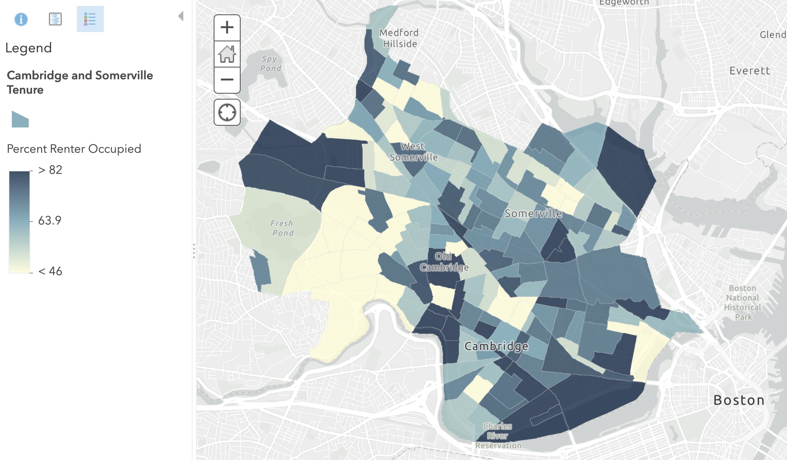 Example of the tenure data we will work with, uploaded to ArcGIS Online.
Steps
-
Visit NHGIS.org.
-
Select
Get Data. -
Select
Topics. 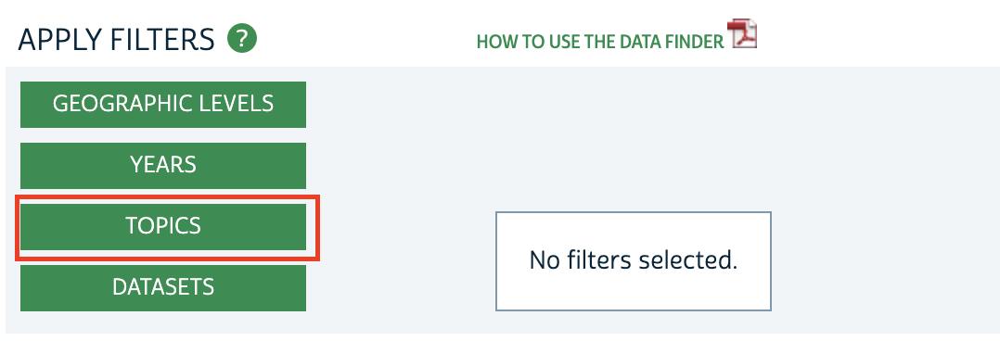 -
Select
Housing. 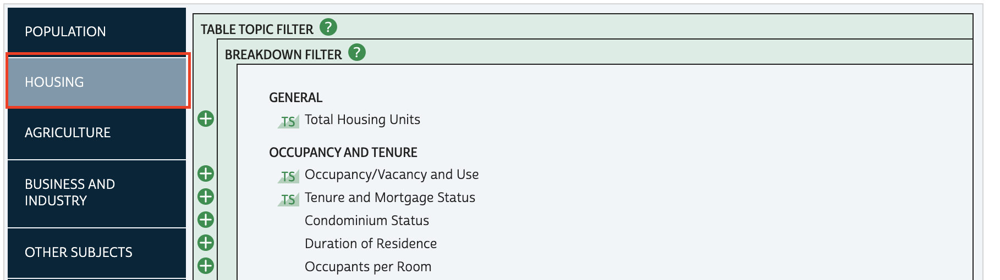 -
Check off
Tenure and Mortgage Status. 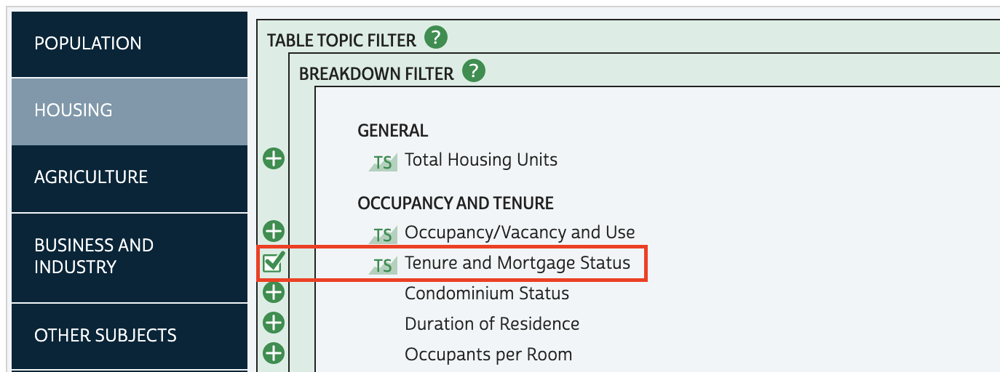 -
Finalize your topics selection by choosing the
Submitbutton. -
To specify we want to work with census tracts, select
Geographic Levels. 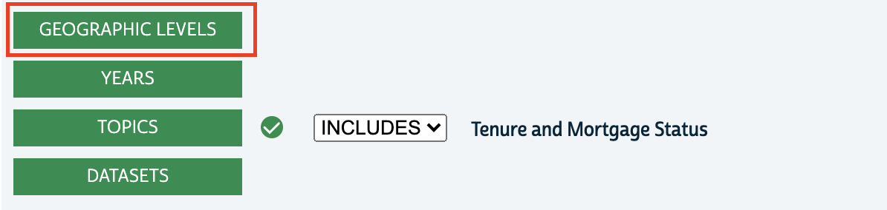 -
Check off
Census Tract. 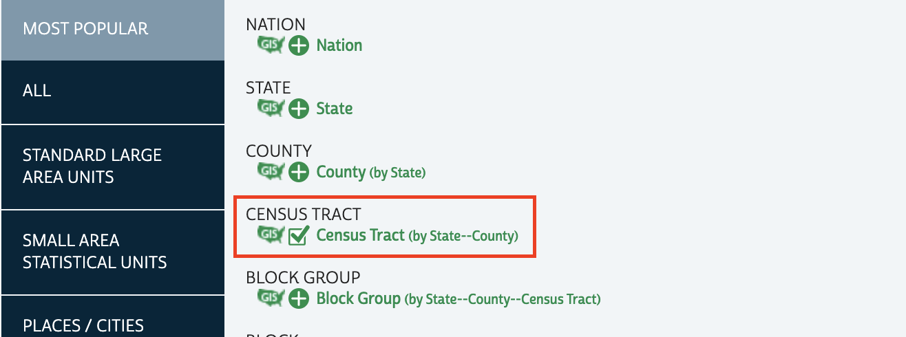 -
Finalize your geographic levels selection by choosing the
Submitbutton. -
To indicate our time frame of 2015-2019, select
Years. 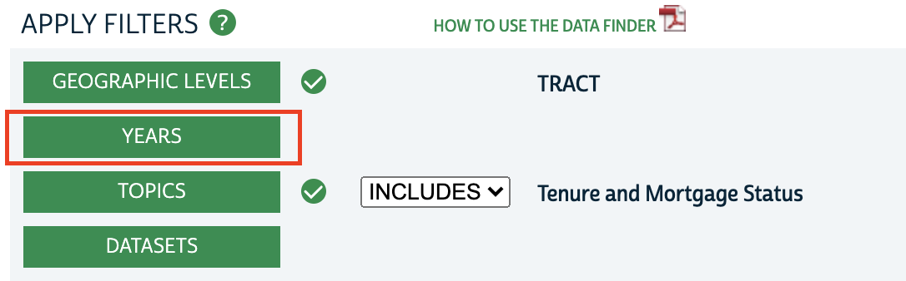 -
Check off
2015-2019. 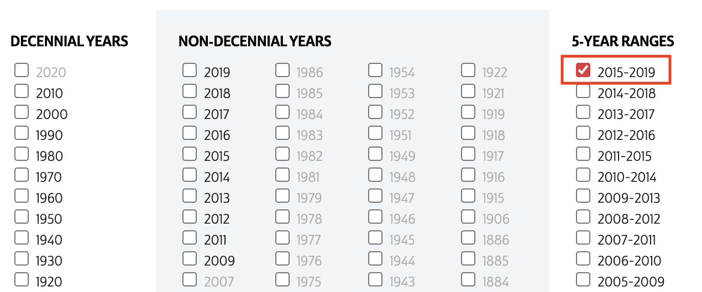 -
Finalize your years selection by choosing the
Submitbutton. -
Under
Source Tables, check off the Tenure data table. This will add the census statistical table to our shopping cart. 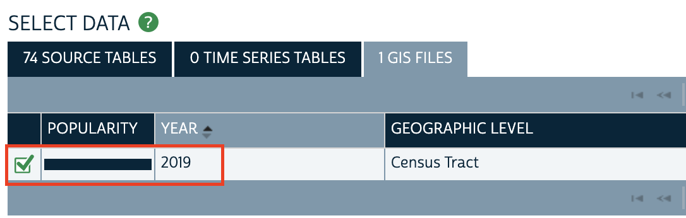 -
To change the results that match our criteria from tables to GIS boundary files, select
GIS Files.
Remember, we need both! 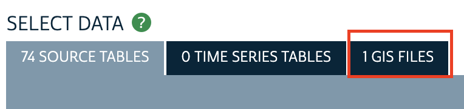
-
Checkout by selecting
Continuefrom the data cart in the upper-right hand corner of the screen. 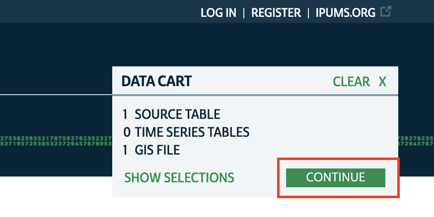 -
Accept all of the download defaults.
-
Select
Submit.
You will need to create a free login in order to checkout. You can create one in a new tab if you don’t want to lose your data selection.
Tips
- It takes a few minutes to prepare your extract. You can either wait and refresh the page, or you will receive an email when the data is ready.
- Extracts come with any accompanying codebook. 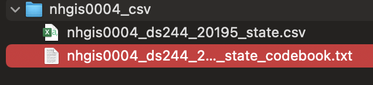
- Use this codebook to make sense of the table’s field names. 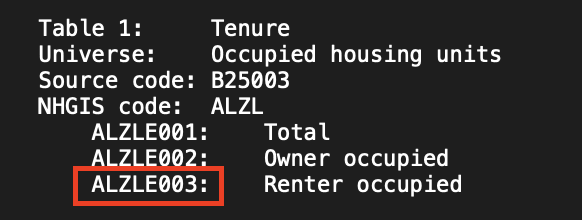